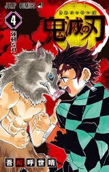

Demon Slayer: Kimetsu no Yaiba (鬼滅の刃, "Blade of Demon Destruction") is a manga series written and illustrated by Koyoharu Gotoge. It has been serialized in Weekly Shonen Jump since February 15, 2016. The series is republished in English by Viz Media.
The series officially ended on May 18, 2020 (Weekly Shonen Jump Issue #4) with a total of 205 chapters.
By July 2025, the manga had over 220 million copies in circulation, including digital versions, making it one of the best-selling manga of 2019-2020. It has received critical acclaim for its art, storyline, action scenes and characters. The Demon Slayer: Kimetsu no Yaiba franchise is one of the highest-grossing media franchises of all time.
In Taisho era Japan, a secret organization known as "Demon Slayer Corps" has waged a war against demons for centuries. Demons are former humans who posses supernatural abilities such as enhanced strength, rapid regeneration, and unique powers reffered to as "Blood Demon Arts". Demons can only be killed if they are exposed direct sunlight, decapitated with weapons crafted from an alloy called Nichirin, or injected with a poison extracted from wisteria flowers.
In contrast, the Demon Slayers are entirely human but employ specialized elemental breathing techniques known as "Breathing Styles". These techniques grant them superhuman strength, heightened abilities, and increased resilience that enable them to fight demons effectively. The most formidable Demon Slayers are known as the "Hashira" and gain this title through multiple advancements in the Corps' ranks, culminating in killing fifty demons at the highest level or a member of the Twelve Kizuki.
Release Date: June 3rd, 2016
Pages: 192
TIn Taisho-era Japan, Tanjiro Kamado is a kindhearted boy who makes a living selling charcoal. However, his peaceful life is shattered when a Demon slaughters his entire family. His little sister Nezuko is the only survivor, but she has been transformed into a Demon herself! Tanjiro sets out on a dangerous journey to find a way to return his sister to normal and destroy the Demon who ruined his life.
Learning to slay Demons won't be easy, and Tanjiro barely knows where to start. The surprise appearance of another individual named Giyu Tomioka might provide some answers… but only if Tanjiro can stop Giyu from killing his sister first!
Chapters List:
Release Date: August 4th, 2016
Pages: 192
During the Final Selection test that must be passed to join the Demon Slayer Corps, Tanjiro faces a disfigured Demon and uses the techniques taught by his master, Sakonji Urokodaki! As Tanjiro begins to walk the path of a Demon Slayer, his search for the Demon who murdered his family leads him to investigate the disappearances of young girls in a nearby town.
Chapters List:
Release Date: October 4th, 2016
Pages: 192
Tanjiro and Nezuko cross paths with two powerful Demons that fight with magical weapons. Even help from Tamayo and Yushiro may not be enough to defeat these Demons who claim to be a part of the Twelve Demon Moons that directly serve Muzan Kibutsuji, the Demon responsible for all of Tanjiro's woes! But, if these Demons can be defeated, what secrets can they reveal about Muzan?
Chapters List:
Pages: 192
Release Date: December 2nd, 2016
After a fierce battle with a Demon inside a maddening house of ever-changing rooms, Tanjiro has a chance to find out about the fighter in the boar-head mask. Who is this passionate swordsman and what does he want? Later, a new mission has Tanjiro and his companions heading for Natagumo Mountain and a confrontation with a mysterious and horrifying threat…
Chapters List:
Release Date: March 3rd, 2017
Pages: 192
At Natagumo Mountain, Tanjiro, Zenitsu and Inosuke battle a terrible family of spider Demons. Taking on such powerful enemies demands all the skill and luck Tanjiro has as he and his companions fight to rescue Nezuko from the spiders' web. The battle is drawing in other Demon Slayers but not all of them will leave Natagumo Mountain alive… or in one piece!
Chapters List:
Release Date: May 2nd, 2017
Pages: 200
The members of the Demon Slayer Corps are sworn to destroy Demons wherever they find them—but the condition of Tanjiro's sister, Nezuko, is a problem. What will the Hashira—the top-ranked fighters of the Demon Slayer Corps—do about Tanjiro protecting his own demonic sister? Meanwhile, Muzan assembles his own minions and intensifies his search for Tanjiro…
Chapters List:
Release Date: August 4th, 2017
Pages: 208
While under the care of one the Demon Slayer Corps' Hashira, Shinobu, Tanjiro, Zenitsu, Inosuke and Nezuko have recovered. They have even learned a new and powerful technique—Total Concentration! They'll need this new power and all their skill on their next Demon-hunting mission aboard the mysterious Infinity Train as it takes them into the dreams of Demons!
Chapters List:
Release Date: October 4th, 2017
Pages: 192
After dealing with several demonic enemies aboard the Infinity Train, Tanjiro, Zenitsu and Inosuke must face the demon spirit of the train itself! Even if they can stop the demon train, the minions of Muzan Kibutsuji are still out there and Tanjiro must continue to improve his strength and skills. Learning the secret of the Hikonami Kagura and Flame Breathing will give him a powerful new advantage.
Chapters List:
Release Date: December 4th, 2019
Pages: 192
Tanjiro and his friends accompany the Hashira, Tengen Uzui, to an entertainment district where Tengen's female ninja agents were gathering information on a Demon, but suddenly disappeared. In order to investigate, Tanjiro and the others disguise themselves as women to sneak in! As they close in on their target, the Demon reaches out for the courtesans of the district!
Chapters List:
Release Date: March 2nd, 2018
Pages: 200
Despite some comedic misunderstandings that almost blew their cover, Tanjiro, Inosuke, and Zenitsu have smoked out Daki, a Demon that has been devouring the residents of an entertainment district for years. The Hashira Tengen Uzui and his ninja companions engage Daki, but if they cannot handle her, what chance do Tanjiro and his friends have of taking on one of Kibutsuji's Upper-Rank Demons by themselves?
Chapters List:
Release Date: June 4th, 2018
Pages: 192
The battle against the powerful sibling demons Gyutaro and Daki is not going well. Although finally able to fight alongside Tanjiro against the monsters, Zenitsu, Inosuke and even the Hashira Tengen Uzui may all be overwhelmed. Battling even one of Lord Muzan's Twelve Kizuki is hard enough—can Tanjiro face two of them alone?
Chapters List:
Release Date: August 3rd, 2018
Pages: 192
For the first time in over 100 years, the upper ranks of Muzan Kibutsuji's Twelve Kizuki are not full. Angered, Muzan dispatches the survivors on another mission. Elsewhere, Tanjiro journeys to a village of swordsmiths and has to explain how his sword was so badly damaged to Hotaru Haganezuka, the swordsmith who made it. While Tanjiro waits for his sword to be repaired, enemies close in…
Chapters List:
Release Date: November 2nd, 2018
Pages: 192
The strange shape-shifting demons Hantengu and Gyokko attack Tanjiro and his friends in the hidden village of swordsmiths. The Mist Hashira, Muichiro Tokito, engages the Demons, but he'll need some help from Tanjiro and Genya, another Demon Slayer. It is bad enough that they have to fight two upper-rank demons, but can they handle a foe who can split itself into four separate bodies and regenerate almost instantly?
Chapters List: